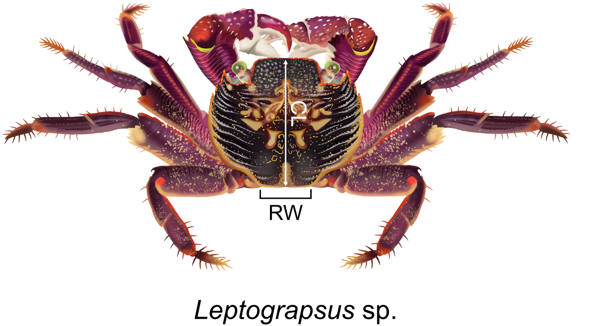
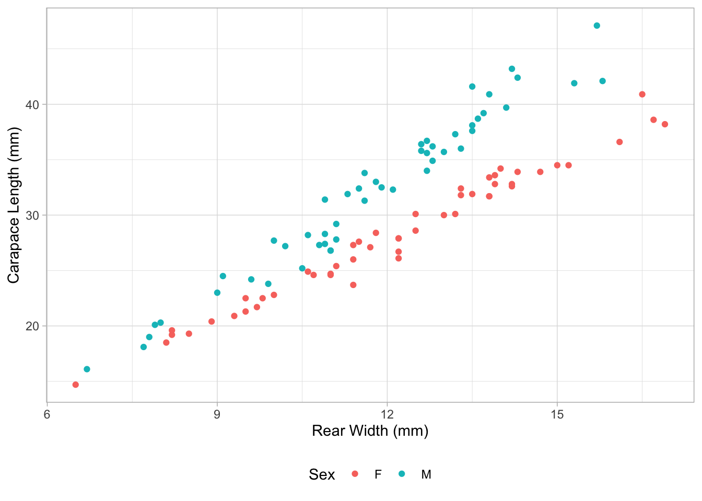
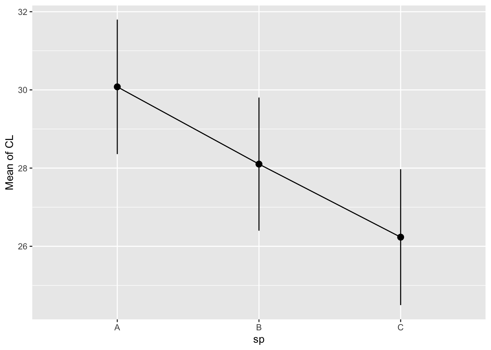
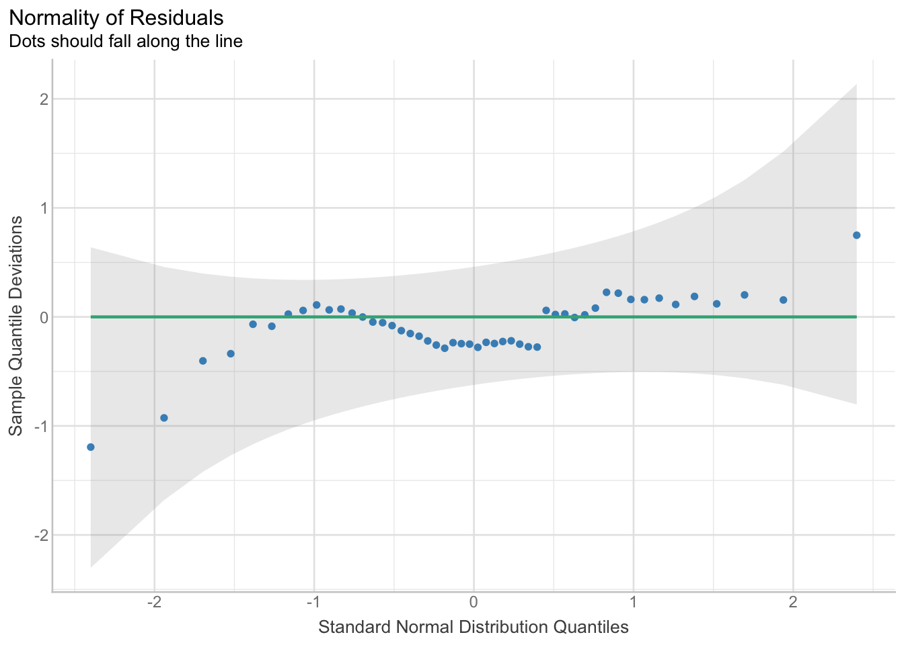
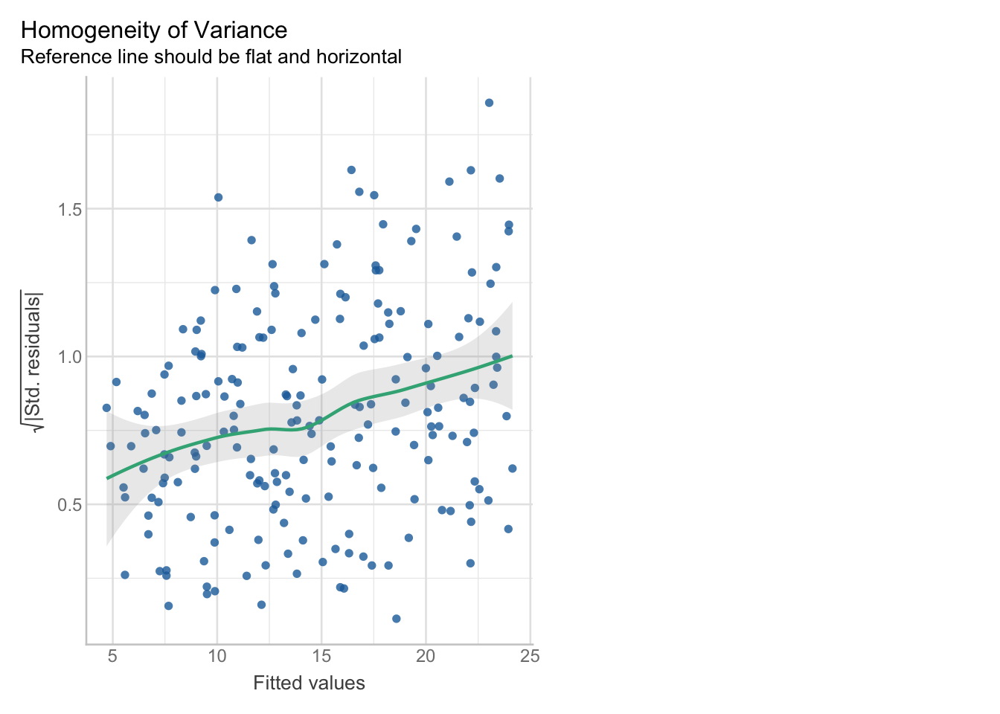
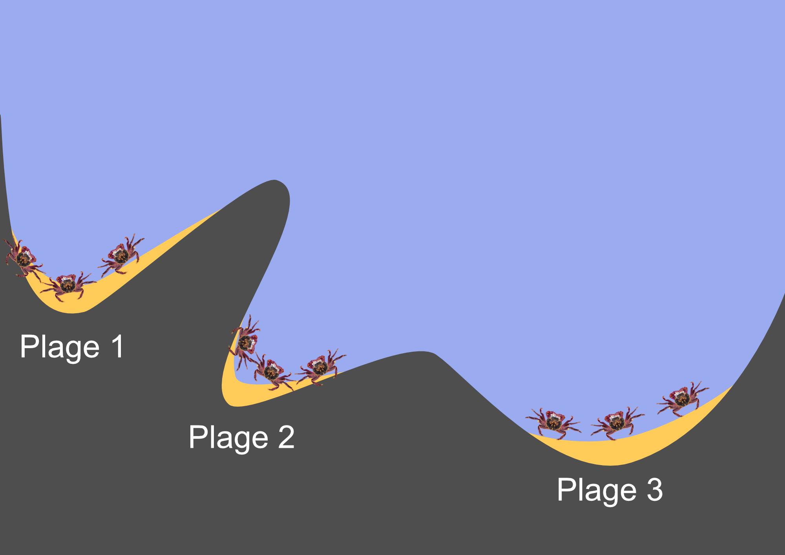
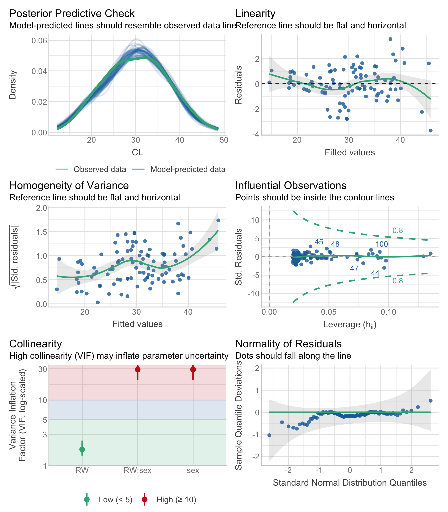

penguins_adelie <- penguins %>%
filter(species == "Adelie")CC1 données sur les crabs
Solution
Consignes
- Vous disposez de 90 minutes pour résoudre les questions suivantes.
- Répondez seul, n’utilisez pas Internet ni l’IA. Vous serez disqualifié si je le constate !
- Écrivez vos réponses sous les questions si elles sont du texte (je donne la longueur attendue) ou insérez votre code dans le chunk R.
- Vous devez écrire du code R uniquement lorsque je vous demande de remplacer les
____. - Seulement dans la question bonus, vous devez écrire du code R entièrement par vous-même.
- Sinon, exécutez simplement le code que j’ai préparé.
- Vous pouvez gagner des points supplémentaires en répondant à la question bonus (4 points en plus).
- Il y a 30 points au total. Planifiez votre temps en conséquence.
- Quand vous avez fini, enregistrez et téléchargez le document, puis envoyez-le moi via ESPADON.
Important : Exécutez ce chunk R avant de commencer pour charger les bons paquets et les données :
Question 1
2 points
Regardez le code suivant, où les données penguins sont filtrées pour ne contenir que les manchots Adélie :
A
1 point
Est-ce que penguins_adelie est une fonction R ou un objet R ?
NoteSolution
penguins_adelie est un objet.
B
1 point
Est-ce que filter() est une fonction R ou un objet R ?
NoteSolution
filter() est une fonction.
Question 2
2 points
Les données dat_crabs_B contiennent des mesures de la carapace (“shell”) de l’espèce “B” du crabe Leptograpsus sp. :

CLest la longueur de la carapace en mm (voir image, en blanc)RWest la largeur arrière en mm (voir image, en noir)
Créer un graphique avec ggplot() : à partir des données dat_crabs_B, représentez la colonne RW sur l’axe x et CL sur l’axe y. Utilisez des couleurs différentes pour la colonne sex. Vous pouvez consulter les données dans l’onglet environnement. Remplacez uniquement les ____ !
NoteSolution
ggplot(data = dat_crabs_B, aes(x = RW, y = CL, color = sex)) +
geom_point() +
labs(x = "Rear Width (mm)", y = "Carapace Length (mm)", col = "Sex") +
theme_light() +
theme(legend.position = "bottom")
Question 3
4 points
A
2 points
Regardez le graphique que vous venez de réaliser. Si vous n’avez pas réussi à le faire, demandez-moi et je vous le montrerai.
Pensez-vous qu’il existe une relation entre la longueur de la carapace et la largeur arrière ? Décrivez le type de relation (positive, négative, pas de relation).
NoteSolution
Il existe une relation positive entre longueur de la carapace (CL) et la largeur arrière (RW).
B
2 points
Pensez-vous qu’il est biologiquement et statistiquement raisonnable d’inclure le sexe des crabes comme variable explicative dans un modèle ? Par exemple si vous vous attendez à une pente différente selon le sexe.
NoteSolution
Il semble biologiquement plausible qu’il existe des différences dans la forme des crabes (définie par la longueur de leur carapace et leur largeur à l’arrière) entre les sexes. Il est donc logique d’inclure la variable
sexdans un modèle.D’après le graphique, la relation entre la longueur de la carapace (
CL) et la largeur arrière (RW) semble dépendre du sexe. Il est donc statistiquement pertinent de prendre en compte le sexe dans le modèle de régression, soit pour inclure des pentes différentes selon le sexe, soit pour considérer des ordonnées à l’origine différentes.
Question 4
1 point
Les données brutes contiennent des mesures pour trois espèces (A, B et C) pour des crabes mâles et femelles. Calculez, pour sex (nom de colonne sex) et espèce (nom de colonne sp), la moyenne, le minimum et le maximum de la longueur de la carapace (CL) des données dat_crabs. Remplacez uniquement les ____ :
NoteSolution
dat_crabs %>%
group_by(sex, sp) %>%
summarise(
mean_CL = mean(CL),
min_CL = min(CL),
max_CL = max(CL)
)`summarise()` has grouped output by 'sex'. You can override using the `.groups`
argument.# A tibble: 6 × 5
# Groups: sex [2]
sex sp mean_CL min_CL max_CL
<chr> <chr> <dbl> <dbl> <dbl>
1 F A 30.1 16.4 39.4
2 F B 28.1 14.7 40.9
3 F C 26.2 10.5 41.2
4 M A 32.7 15.0 48.4
5 M B 32.0 16.1 47.1
6 M C 32.6 17.2 49.5Question 5
5 points
Considérez maintenant ce modèle pour les crabes femelles de l’espèce B :
# filter data
dat_crabs_B_f <- dat_crabs %>%
filter(sex == "F", sp == "B")
# make model
m_crabs_B_f <- lm(CL ~ RW, data = dat_crabs_B_f)
# output
summary(m_crabs_B_f)
Call:
lm(formula = CL ~ RW, data = dat_crabs_B_f)
Residuals:
Min 1Q Median 3Q Max
-2.6333 -0.4416 -0.1730 0.5964 2.3441
Coefficients:
Estimate Std. Error t value Pr(>|t|)
(Intercept) -0.98769 0.68842 -1.435 0.158
RW 2.39658 0.05563 43.084 <2e-16 ***
---
Signif. codes: 0 '***' 0.001 '**' 0.01 '*' 0.05 '.' 0.1 ' ' 1
Residual standard error: 0.9496 on 48 degrees of freedom
Multiple R-squared: 0.9748, Adjusted R-squared: 0.9743
F-statistic: 1856 on 1 and 48 DF, p-value: < 2.2e-16A
1 point
La relation entre la longueur de la carapace CL et la largeur arrière RW est-elle positive ou négative ?
NoteSolution
La relation entre la longueur de la carapace CL et la largeur arrière RW est positive, puisque la pente (2.39658) est positive.
B
1 point
Cette relation est-elle statistiquement significative, et pourquoi ?
NoteSolution
Cette relation est significative, car la p-value (<2e-16) est inférieure au niveau d’alpha de 0,05.
C
2 points
Quelle proportion de la variance des données est expliquée par le modèle (dans ce cas, par la largeur arrière RW) ? Donnez la valeur en pourcentage.
NoteSolution
La valeur R² correspond à la variance expliquée par le modèle. Ici, elle est de 0,9748, ce qui correspond à 97,48 %.
D
1 point
Considérez l’ordonnée à l’origine (intercept) estimé et la pente donnés dans la sortie summary(). Quelle est la longueur de carapace attendue pour une largeur arrière de 12 mm ? Vous pouvez arrondir les nombres à deux chiffres. Rappel :
\[y = a + b \cdot x\]
où \(y\) est la valeur attendue de la variable réponse, \(a\) l’ordonnée à l’origine (intercept), \(b\) la pente, et \(x\) une valeur de la variable explicative numérique.
Rappelez-vous que vous pouvez utiliser R pour ce calcul, par exemple :
3 + 5 * 7[1] 38
NoteSolution
L’ordonnée à l’origine est de -0,98769, et la pente de 2,39658:
\[ \begin{aligned} y &= -0.98769 + 2.39658 * x \\ y &= -0.98769 + 2.39658 * 12~\text{mm} \\ y &= 27.77127~\text{mm} \end{aligned} \]
Question 6
6 points
L’ensemble complet des données (dat_crabs) contient des mesures pour plusieurs espèces (A, B et C).
Considérez le modèle et la sortie suivants pour les crabes femelles des trois espèces :
# filter data
dat_crabs_f <- dat_crabs %>%
filter(sex == "F")
# model
m_crabs_f <- lm(CL ~ sp, data = dat_crabs_f)
# anova output
anova(m_crabs_f)Analysis of Variance Table
Response: CL
Df Sum Sq Mean Sq F value Pr(>F)
sp 2 358.6 179.288 4.833 0.0093 **
Residuals 144 5341.9 37.096
---
Signif. codes: 0 '***' 0.001 '**' 0.01 '*' 0.05 '.' 0.1 ' ' 1A
1 point
Quelle est la variable réponse (la variable que vous voulez prédire) ?
NoteSolution
La variable réponse est la longueur de la carapace (CL).
B
1 point
Quelle est la variable explicative (celle utilisée pour prédire la variable réponse) ?
NoteSolution
La variable explicative est l’espèce (sp).
C
1 point
Regardez la sortie de anova() ci‑dessus. La longueur de la carapace (CL) diffère‑t‑elle de manière statistiquement significative entre les espèces, et pourquoi ?
NoteSolution
Oui, la longueur de la carapace (CL) varie statistiquement d’une espèce à l’autre, car la p-value (0,0093) est inférieure au niveau d’alpha de 0,05.
D
2 points
Faites un test post-hoc :
estimate_contrasts(model = m_crabs_f, p_adjust = "tukey")We selected `contrast=c("sp")`.Marginal Contrasts Analysis
Level1 | Level2 | Difference | SE | 95% CI | t(144) | p
---------------------------------------------------------------------
B | A | -1.98 | 1.22 | [-4.40, 0.44] | -1.61 | 0.243
C | A | -3.84 | 1.24 | [-6.29, -1.40] | -3.11 | 0.006
C | B | -1.87 | 1.23 | [-4.30, 0.56] | -1.52 | 0.285
Variable predicted: CL
Predictors contrasted: sp
p-value adjustment method: Tukeyet tracez les moyennes et intervalles de confiance estimés par le modèle :
estimate_means(model = m_crabs_f) %>%
plot()We selected `by=c("sp")`.
Quelles paires diffèrent significativement entre elles ?
NoteSolution
Les espèces A et C présentent des différences significatives l’une par rapport à l’autre (p-value du test post-hoc = 0,006), mais aucune différence significative n’a été observée entre les espèces A et B (p-value du test post-hoc = 0,243) ni entre les espèces B et C (p-value du test post-hoc = 0,285).
E
1 point
Quand on effectue de nombreux tests sur les mêmes données, comme ces tests post-hoc, pourquoi faut-il ajuster les p-value ?
NoteSolution
Lorsqu’on effectue de nombreux tests simultanément, la probabilité de commettre au moins une erreur de type I (faux positif) augmente. C’est pourquoi il est nécessaire d’ajuster les p-values (par exemple avec la correction de Tukey) pour maintenir un taux d’erreur global acceptable.
Question 7
4 points
A
1 point
Quelles sont les trois principales hypothèses des modèles linéaires ?
NoteSolution
- L’indépendance des observations
- L’homoscédasticité
- La normalité des résidus
B
3 points
Expliquez brièvement chaque hypothèse.
NoteSolution
L’indépendance des observations : Chaque observation doit être indépendante des autres — il ne doit pas y avoir de structure (par ex. mesures répétées, corrélation spatiale ou temporelle, échantillonnage hiérarchique).
L’homoscédasticité : La variance des résidus doit être constante quelle que soit la valeur de la variable explicative (variance homogène).
La normalité des résidus : Les résidus (différences entre valeurs observées et prédites) doivent suivre approximativement une distribution normale.
Question 8
2 points
Regardez ce QQ-plot.
check_normality(m_crabs_B_f) %>%
plot()
Rappel : Le Q-Q plot (Quantile-Quantile plot) vérifie si les résidus suivent une distribution normale. Si les points s’alignent près de la ligne verte, l’hypothèse de normalité est satisfaite. Les écarts, surtout aux extrémités (queues), indiquent des écarts à la normalité. De petits écarts sont généralement acceptables (à l’intérieur de la bande grise).
Pensez-vous que les résidus sont normalement distribués ?
NoteSolution
Les résidus observés (représentés par des points) suivent la droite correspondant à une distribution normale des résidus. On constate de légers écarts aux extrémités, mais l’intervalle de confiance englobe cette droite, ce qui suggère que les résidus sont globalement compatibles avec la normalité (limite).
Question 9
2 points
Regardez ce graphique qui fait partie de check_model().
# load data
dat_model_checks <- read.csv(here("exam/CC1/data/dat_model_checks.csv"))
# model
m_var <- lm(y_var ~ x_var, data = dat_model_checks)
# assess variance
check_model(m_var, check = "homogeneity")
Rappel : Ce graphique montre les résidus (différence entre valeurs brutes et valeurs modélisées) en fonction des valeurs ajustées pour évaluer si la variance est constante. Si l’étalement reste à peu près constant le long de l’axe des x, la variance est constante (bon). Si l’étalement s’élargit, se rétrécit (entonnoir) ou augmente, la variance n’est pas constante.
La variance est-elle égale le long de la variable explicative (1 point) ?
NoteSolution
La variance augmente avec les valeurs moyennes. On le voit à la dispersion plus importante des points pour les valeurs estimées plus élevées, ainsi qu’à la pente positive de la ligne verte. On parle alors d’hétéroscédasticité et l’hypothèse d’homoscédasticité n’est donc pas vérifiée.
Pourquoi cela impacterait-il un modèle linéaire (1 point) ?
NoteSolution
Les modèles linéaires supposent une variance constante ; le non-respect de l’hypothèse d’homoscédasticité conduit à des estimations biaisées des p-values et des intervalles de confiance. Il est donc impossible de se fier aux résultats d’un tel modèle.
Question 10
2 points
Imaginez le plan d’échantillonnage suivant.

Les crabes mesurés dans nos données ont été collectés sur trois plages différentes. À chaque plage, trois crabes ont été prélevés. La distance entre les plages est d’au moins 20 km.
A
1 point
Pensez-vous que toutes les mesures (les observations individuelles des crabes) sont indépendantes les unes des autres ou y a-t-il une structure ?
NoteSolution
Les données présentent une certaine structure. Dans le cadre de cette étude, des données ont été recueillies sur plusieurs plages. Au sein d’une même plage, les conditions environnementales sont plus homogènes qu’entre les différentes plages. Les multiples mesures effectuées sur les crabes au sein d’une même plage constituent donc des pseudo-répétitions qui ne sont pas représentatives des conditions environnementales sur l’ensemble de la côte.
B
1 point
Pourquoi est-ce important pour les modèles linéaires ?
NoteSolution
Si le modèle considère la pseudo-réplication (réplicats au niveau de chaque anémone) comme un véritable réplicat, les p-values et les intervalles de confiance seront biaisés.
Bonus Question
4 points en plus
A
1 point en plus
Prenez les données des crabes pour l’espèce B (dat_crabs_B) et évaluez l’impact de la largeur arrière RW et du sex sur la longueur de la carapace CL avec un modèle linéaire incluant une interaction. Cela correspond au graphique que vous avez réalisé à la Question 3. Vous devez écrire votre propre code R.
NoteSolution
m_crab_sex <- lm(CL ~ RW * sex, data = dat_crabs_B)B
1 point en plus
Interprétez le modèle (vous devez écrire votre propre code R). La pente diffère-t-elle significativement entre les sexes ?
NoteSolution
anova(m_crab_sex)Analysis of Variance Table
Response: CL
Df Sum Sq Mean Sq F value Pr(>F)
RW 1 3790.2 3790.2 2244.37 < 2.2e-16 ***
sex 1 643.6 643.6 381.12 < 2.2e-16 ***
RW:sex 1 121.2 121.2 71.75 2.842e-13 ***
Residuals 96 162.1 1.7
---
Signif. codes: 0 '***' 0.001 '**' 0.01 '*' 0.05 '.' 0.1 ' ' 1Étant donné que l’interaction entre la largeur arrière (RW) et le sexe (sex) est significative (la p-value de RW:sex est de 2,842e-13), la pente varie d’une catégorie de sexe à l’autre de manière significative.
C
2 points en plus
Vérifiez les hypothèses du modèle avec check_model() (vous devez écrire votre propre code R). Pensez-vous qu’une des trois principales hypothèses est violée ? Expliquez pourquoi.
NoteSolution
check_model(m_crab_sex)
Ces visualisations mettent en évidence certains problèmes dans le modèle. L’hypothèse de normalité est sur le point d’être violée, car on observe un écart important entre les résidus observés et la droite correspondant à une distribution normale. Cependant, l’intervalle de confiance englobe toujours cette droite, ce qui rend cette violation acceptable.
La variance augmente toutefois avec les valeurs moyennes. L’hypothèse d’homoscédasticité semble également violée.
Par ailleurs, vous pouvez analyser un tel ensemble de données de manière plus appropriée en utilisant un modèle GLM avec une distribution gamma (les données ne peuvent être que positives).